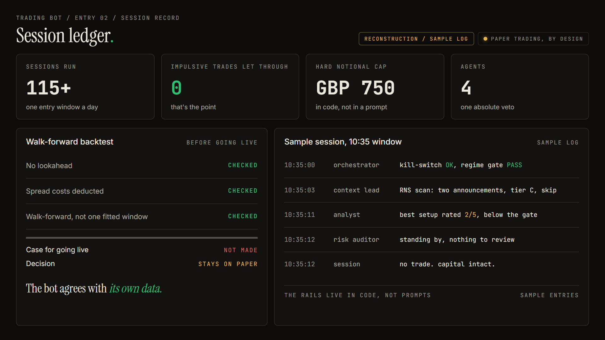

The schedule / Entry 02 / Multi-agent AI
Trading Bot.
Paper trading, by designIG demo account / Oracle Cloud, systemd
The four agents from chapter 3. They scan the FTSE 100 every weekday, rate every setup, and hold an absolute veto over every trade. 115+ sessions in, they have let zero impulsive trades through. That is the point.
I studied financial markets at Jai Hind College and hold a Chartered Wealth Manager certification. I understood markets. But understanding them and trading them profitably turned out to be two different things. I'd watch a stock I'd researched all week drop sharply on a single announcement and sell within five minutes, then watch it recover by close. I'd spot a FTSE dip and buy in, convinced it was the bottom, only for it to keep sliding. After a red day I'd jump into something I hadn't even properly analysed, just to make the loss back.
The analysis was usually fine. It was the real-time decisions that killed it. I'd override my own rules the moment I felt any pressure. So the question became: could I build something that kept the analysis but removed me from the execution?
Every weekday at 10:35 GMT, thirty minutes after London open once the opening noise has settled, the system runs. APScheduler fires five jobs through the day. Nothing is held overnight.
- 10:30Start 5-minute candle collection via Lightstreamer
- 10:35Full four-agent evaluation across its FTSE watchlist. The only entry window of the day
- 12:00Regime recheck: close everything if the FTSE is below -1%
- 14:00Second regime recheck
- 16:00Liquidate everything. No overnight gap risk, ever
First thing each session: kill-switch and market regime check. If either fails, nothing else runs. News gets scanned and classified by tier before the technical check: EMA, VWAP, RSI. Only setups that pass everything reach the quality gate, where Claude Sonnet rates them against a strict JSON schema. The last word belongs to Claude Opus as risk auditor. If it vetoes, the trade dies. The rails live in code, not prompts: the agents can assess and recommend, they cannot override the config.
Kill-switch and regime check. If the equity floor is breached or the FTSE fails its regime gate, the session never starts.
Same-day RNS announcements, classified Tier A (earnings, M&A), Tier B (upgrades, buybacks) or Tier C (skip). No catalyst, no conviction.
Technical quality gate. EMA, VWAP and RSI checks, then a structured 1 to 5 rating. Marginal setups score exactly what they deserve.
Absolute veto, no appeal. Correlation risk, position sizing, session context. 115+ sessions, and nothing has got past the floor.
| Rail | Rule | Value |
|---|---|---|
| Max notional | Per trade, absolute | GBP 750 |
| Stop loss / take profit | Fixed levels, set in config | IN CODE |
| Positions | One at a time, no pyramiding | MAX 1 |
| Kill switch | Equity floor: liquidate and stop until manual reset | GBP 750 |
| Leverage | None | 0 |
| Overnight exposure | Everything liquidated at 16:00 | 0 |
| Every parameter lives in config.py | The agents cannot touch it | |
- E.1Structured outputs, no fallback holesThe quality gate used to run on a model whose JSON sometimes failed to parse, and the fallback defaulted the score to 3: a safety hole that could let marginal trades through. Switched to Claude Sonnet with a guaranteed schema. No parse failures, no fallback needed. Prompt caching across parallel scans cut token spend by about 90%.
- E.2News before numbersEach ticker's RNS gets checked before the technical scan. One API call finds same-day announcements and classifies them by tier. This replaced a screen scraper that kept breaking; the scraper survives only as the fallback.
- E.3Walk-forward backtesting60-day default, up to two years. Evaluates at 10:35 on each historical day with no lookahead bias and a 0.2% round-trip spread cost deducted.
- E.4Atomic state, full audit trailA file-locked state manager prevents race conditions between the order manager and the kill switch. Every decision writes to a JSONL audit trail: timestamp, session, stage, ticker, outcome. The whole system is one long paper trail, which is how I like my systems.
A trading bot whose proudest metric is the trades it refused to place.
I built this bot to trade. Then I ran the walk-forward backtests, no lookahead, spread costs deducted, and they didn't make the case for going live. So it hasn't gone live. That's not the project failing. It's the same rule that vetoes an impulsive trade, applied to an impulsive launch.
The bot agrees with its own data.

| Ref | Project | Summary | Status |
|---|---|---|---|
| 01 | OpsPilot | The AI that answers my messages: 6,124+ documents, live finance data, one-click approval. | Production |
| 03 | Uni-Nation Digital | Website, inventory PWA and Hindi voice stock entry for the family fabric business. | Being repaired |
| 04 | WhatsApp Smart | A Chrome extension that gives WhatsApp scheduling, AI replies and summaries. | Prototype |
| 05 | SCS Cockpit | The study engine I built for my own CIMA Strategic Case Study. I passed. | Retired, job done |